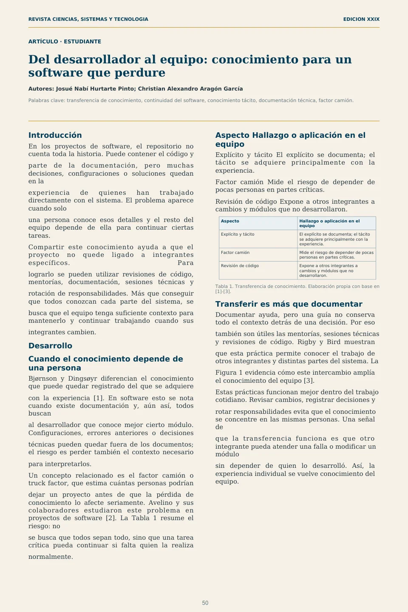
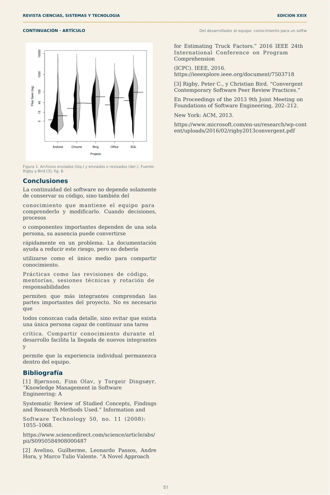

Del desarrollador al equipo: conocimiento para un software que perdure
Introducción
En los proyectos de software, el repositorio no cuenta toda la historia. Puede contener el código y
parte de la documentación, pero muchas decisiones, configuraciones o soluciones quedan en la
experiencia de quienes han trabajado directamente con el sistema. El problema aparece cuando solo
una persona conoce esos detalles y el resto del equipo depende de ella para continuar ciertas tareas.
Compartir este conocimiento ayuda a que el proyecto no quede ligado a integrantes específicos. Para
lograrlo se pueden utilizar revisiones de código, mentorías, documentación, sesiones técnicas y
rotación de responsabilidades. Más que conseguir que todos conozcan cada parte del sistema, se
busca que el equipo tenga suficiente contexto para mantenerlo y continuar trabajando cuando sus
integrantes cambien.
Desarrollo
Cuando el conocimiento depende de una persona
Bjørnson y Dingsøyr diferencian el conocimiento que puede quedar registrado del que se adquiere
con la experiencia [1]. En software esto se nota cuando existe documentación y, aún así, todos buscan
al desarrollador que conoce mejor cierto módulo. Configuraciones, errores anteriores o decisiones
técnicas pueden quedar fuera de los documentos; el riesgo es perder también el contexto necesario
para interpretarlos.
Un concepto relacionado es el factor camión o truck factor, que estima cuántas personas podrían
dejar un proyecto antes de que la pérdida de conocimiento lo afecte seriamente. Avelino y sus colaboradores estudiaron este problema en proyectos de software [2]. La Tabla 1 resume el riesgo: no
se busca que todos sepan todo, sino que una tarea crítica pueda continuar si falta quien la realiza
normalmente.
Aspecto Hallazgo o aplicación en el equipo
Explícito y tácito El explícito se documenta; el tácito se adquiere principalmente con la experiencia.
Factor camión Mide el riesgo de depender de pocas personas en partes críticas.
Revisión de código Expone a otros integrantes a cambios y módulos que no desarrollaron.
Aspecto Hallazgo o aplicación en el equipo
Explícito y tácito El explícito se documenta; el tácito se adquiere principalmente con la experiencia.
Factor camión Mide el riesgo de depender de pocas personas en partes críticas.
Revisión de código Expone a otros integrantes a cambios y módulos que no desarrollaron.
Tabla 1. Transferencia de conocimiento. Elaboración propia con base en [1]-[3].
Transferir es más que documentar
Documentar ayuda, pero una guía no conserva todo el contexto detrás de una decisión. Por eso
también son útiles las mentorías, sesiones técnicas y revisiones de código. Rigby y Bird muestran
que esta práctica permite conocer el trabajo de otros integrantes y distintas partes del sistema. La
Figura 1 evidencia cómo este intercambio amplía el conocimiento del equipo [3].
Estas prácticas funcionan mejor dentro del trabajo cotidiano. Revisar cambios, registrar decisiones y
rotar responsabilidades evita que el conocimiento se concentre en las mismas personas. Una señal de
que la transferencia funciona es que otro integrante pueda atender una falla o modificar un módulo
sin depender de quien lo desarrolló. Así, la experiencia individual se vuelve conocimiento del equipo.
Figura 1. Archivos enviados (izq.) y enviados o revisados (der.). Fuente: Rigby y Bird [3], fig. 8.
Conclusiones
La continuidad del software no depende solamente de conservar su código, sino también del
conocimiento que mantiene el equipo para comprenderlo y modificarlo. Cuando decisiones, procesos
o componentes importantes dependen de una sola persona, su ausencia puede convertirse
rápidamente en un problema. La documentación ayuda a reducir este riesgo, pero no debería
utilizarse como el único medio para compartir conocimiento.
Prácticas como las revisiones de código, mentorías, sesiones técnicas y rotación de responsabilidades
permiten que más integrantes comprendan las partes importantes del proyecto. No es necesario que
todos conozcan cada detalle, sino evitar que exista una única persona capaz de continuar una tarea
crítica. Compartir conocimiento durante el desarrollo facilita la llegada de nuevos integrantes y
permite que la experiencia individual permanezca dentro del equipo.
Bibliografía
[1] Bjørnson, Finn Olav, y Torgeir Dingsøyr. “Knowledge Management in Software Engineering: A
Systematic Review of Studied Concepts, Findings and Research Methods Used.” Information and
Software Technology 50, no. 11 (2008): 1055–1068.
https://www.sciencedirect.com/science/article/abs/ pii/S0950584908000487
[2] Avelino, Guilherme, Leonardo Passos, Andre Hora, y Marco Tulio Valente. “A Novel Approach
[3] Rigby, Peter C., y Christian Bird. “Convergent Contemporary Software Peer Review Practices.”
En Proceedings of the 2013 9th Joint Meeting on Foundations of Software Engineering, 202–212.
New York: ACM, 2013.
https://www.microsoft.com/en-us/research/wp-cont ent/uploads/2016/02/rigby2013convergent.pdf
Ver diseño original de las páginas

